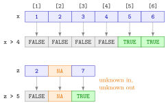

Comparison Operators¶
Definition¶
The comparison operators of R are
| Operator | Meaning |
|---|---|
< |
less than |
> |
greater than |
<= |
less than or equal to |
>= |
greater than or equal to |
== |
equal to |
!= |
not equal to |
A comparison such as x > 4 is a logical expression: it evaluates to a logical vector with one entry TRUE, FALSE or NA for each element of x. Comparisons are vectorized: R compares the two sides position by position, so the result has the length of the longer side.
Interpretation¶
A comparison asks a yes-or-no question about every element of a vector at once. x > 4 does not return the elements that are larger than 4; it returns the answers, one TRUE or FALSE per position, in the same order as x.

The upper row of the figure is the comparison x > 4 for x <- c(1, 2, 3, 4, 5, 6): each cell is tested on its own, and only positions 5 and 6 answer TRUE. The lower row shows what happens when a value is missing. NA > 5 cannot be decided, so the answer in that position is NA as well, not FALSE.
Equality needs two equals signs. A single = is an assignment, like <- (see objects and assignment): typing x = 4 at the console silently replaces the whole vector x by the number 4 instead of asking a question. Comparisons also work on character vectors, where == tests for an exact match of the whole string: "Cat" == "cat" is FALSE because R is case-sensitive, and "cat " == "cat" is FALSE because of the trailing space.
The logical vector is the raw material for the rest of the week. It selects elements (logical subsetting), combines with other conditions through &, | and ! (logical operators), and counts with sum() and mean() (counting with logical vectors). In mathematical terms, x > 4 evaluates the statement for every index , much like an indicator function.
A common mistake is to test for a missing value with x == NA. The answer is always NA, whatever x holds; use is.na(x) instead (missing values). A second trap is exact equality between decimal numbers: 0.1 + 0.2 == 0.3 is FALSE, because neither side is stored exactly.
Key Results¶
<,>,<=,>=,==and!=return a logical vector; for two vectors of unequal length the shorter one is recycled.==compares,=assigns. Writing=where==was meant changes an object, gives an error, or quietly returns a wrong result:y[y = 4]givesNAinstead of the elements equal to 4.- For character data,
==requires an exact match of the complete string, including upper and lower case and spaces. - Any comparison with
NAgivesNA, includingNA == NA. - Decimal numbers are stored in binary with a tiny rounding error, so test them with a tolerance, for example
abs(a - b) < 1e-9, rather than with==.
Examples¶
1. One answer per element. All six operators applied to the same vector.
x <- c(1, 2, 3, 4, 5, 6)
x > 4
#> [1] FALSE FALSE FALSE FALSE TRUE TRUE
x >= 4
#> [1] FALSE FALSE FALSE TRUE TRUE TRUE
x == 4
#> [1] FALSE FALSE FALSE TRUE FALSE FALSE
x != 4
#> [1] TRUE TRUE TRUE FALSE TRUE TRUE
Each result has length 6, the length of x.
2. Exact matching of text. A comparison with a character value is case-sensitive and matches complete strings only.
pets <- c("cat", "Cat", "dog", "cat ")
pets == "cat"
#> [1] TRUE FALSE FALSE FALSE
pets != "cat"
#> [1] FALSE TRUE TRUE TRUE
Only the first entry is exactly "cat"; "Cat" and "cat " (with a space) are different strings.
3. = is not a comparison. Asking "is y equal to 4?" with a single equals sign overwrites y.
After y = 4 the original vector is gone and y is the single number 4. R gives no warning.
4. Missing values and decimals. Both are classic sources of surprising answers.
z <- c(2, NA, 7)
z > 5
#> [1] FALSE NA TRUE
z == NA
#> [1] NA NA NA
0.1 + 0.2 == 0.3
#> [1] FALSE
abs((0.1 + 0.2) - 0.3) < 1e-9
#> [1] TRUE
The comparison with NA gives NA in every position. The sum 0.1 + 0.2 differs from 0.3 by about , enough for == to answer FALSE; the comparison with a tolerance gives the intended answer.
Prerequisites¶
Related Concepts¶
- Logical Subsetting
- Logical Operators
- Membership Operator %in%
- Counting with Logical Vectors
- Missing Values
- Vector Recycling
Sources¶
- Programming for EOR · Week 2
- Lecture 2 script, Part 1 (Conditional Operations and Sequences), sections Logical Operations and Additional logical operators
Aliases: relational operators, comparison operator, ==, !=, >=, <=, equality test, logical expression Keywords: ==, !=, <, >, <=, >=, logical vector, element-wise comparison, case-sensitive matching
Last updated: 10 November 2026 16:43
Comparison OperatorsCounting with Logical VectorsCore dplyr Verbsif–else StatementLogical OperatorsLogical SubsettingMembership Operator %in%Missing Valueswhile LoopAtomic Data TypesAtomic VectorVectorized OperationsVector Recycling